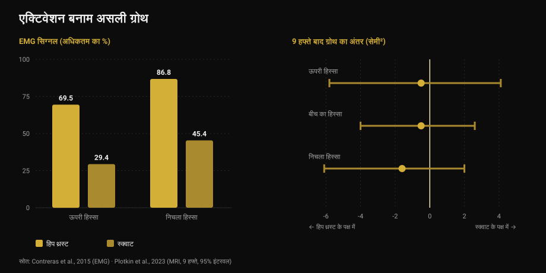
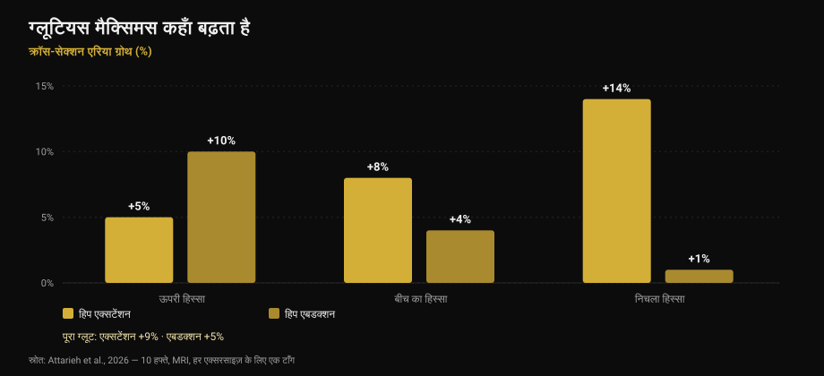

ग्लूट्स एक्सरसाइज़: हिप थ्रस्ट या स्क्वाट?
लेखक: Giammaria Loi · अपडेट 17 अक्टूबर 2026

एक बहुत शेयर हुई पोस्ट कहती है कि हर लेग डे पर ग्लूट्स के लिए तीन कैटेगरी ज़रूरी हैं: भारी कंपाउंड, एक्सेसरी, और "पंप" वाला आइसोलेशन। ढाँचा साफ़-सुथरा है और सही भी लगता है। मैंने इसे जाँचने के लिए नौ स्टडी पढ़ीं। आख़िरी सलाह — सिर्फ़ हिप थ्रस्ट मत करो — टिकती है। लेकिन जिन तीन खंभों पर यह खड़ी है, उनमें से दो नहीं टिकते: पंप वह मैकेनिज़्म है ही नहीं जो पोस्ट बताती है, और जो एक्सरसाइज़ "ज़्यादा एक्टिवेट" करती है वह ज़्यादा ग्रोथ देने वाली नहीं है।
संक्षेप में
- हिप थ्रस्ट और स्क्वाट ग्लूट्स को बराबर बढ़ाते हैं। नौ हफ़्ते, MRI, सेट बराबर: कोई मापने लायक फ़र्क नहीं (Plotkin et al., 2023)।
- हिप थ्रस्ट कहीं ज़्यादा एक्टिवेट करता है — ग्लूटियस मैक्सिमस में 69.5% बनाम 29.4% तक इलेक्ट्रिकल सिग्नल — और इससे ग्रोथ का अंदाज़ा नहीं लगता (Contreras et al., 2015; Plotkin et al., 2023)।
- "पंप" ग्रोथ का तीसरा मैकेनिज़्म नहीं है। मेटाबोलिक स्ट्रेस, सेल स्वेलिंग और तुरंत बढ़ने वाले हॉर्मोन, हाइपरट्रॉफी के स्वतंत्र कारण के रूप में समर्थित नहीं हैं (Van Every et al., 2025)।
- एक्सरसाइज़ बदलना वाक़ई काम का है, पर वजह दूसरी है: हिप एक्सटेंशन और हिप एबडक्शन एक ही मसल के अलग-अलग हिस्से बढ़ाते हैं (Attarieh et al., 2026)।
- पंप वर्क के लिए बताया गया 30-60 सेकंड रेस्ट सबसे कमज़ोर कड़ी है: 60 सेकंड से कम पर हाइपरट्रॉफी अक्सर ख़राब होती है (Singer et al., 2024)।
पोस्ट क्या कहती है
हर लेग डे पर तीन कैटेगरी। मैकेनिकल टेंशन के लिए भारी कंपाउंड (स्क्वाट, डेडलिफ़्ट, सिंगल-लेग)। फ़ाइबर ग्रोथ के लिए ग्लूट-फ़ोकस्ड एक्सेसरी (हिप थ्रस्ट, गुड मॉर्निंग, RDL)। और पंप के लिए हाई-रेप आइसोलेशन (किकबैक, एबडक्शन), जिसे स्लाइड में "मसल ग्रोथ का तीसरा मैकेनिज़्म: मेटाबोलिक स्ट्रेस" कहा गया है।
साइंस से पहले एक अजीब बात: कैप्शन और टेबल आपस में मेल नहीं खाते। कैप्शन 5-8, 8-20 और 25+ रेप्स बताता है; पहली स्लाइड की टेबल 3-8, 8-15 और 15-25+ कहती है। टेक्स्ट पढ़ने वाले और तस्वीर देखने वाले को दो अलग प्रोग्राम मिलते हैं। छोटी बात है, पर यह बताती है कि ऐसे ढाँचे असल में कितने सटीक होते हैं।
"ज़्यादा एक्टिवेट" का मतलब "ज़्यादा ग्रोथ" नहीं
यही वह हिस्सा है जिसे आपकी एक्सरसाइज़ चुनने की आदत बदलनी चाहिए।
2015 में Bret Contreras — यानी वही शख़्स जिसने हिप थ्रस्ट को लोकप्रिय बनाया — वाली टीम ने तेरह ट्रेंड महिलाओं में मसल की इलेक्ट्रिकल एक्टिविटी (इलेक्ट्रोमायोग्राफ़ी या EMG: एक्सरसाइज़ के दौरान मसल तक कितना सिग्नल पहुँचता है) मापी और 10 रेप वाले वज़न पर हिप थ्रस्ट और स्क्वाट की तुलना की। नतीजा एकतरफ़ा है: ग्लूटियस मैक्सिमस के ऊपरी हिस्से में हिप थ्रस्ट औसतन अधिकतम का 69.5% बनाम स्क्वाट का 29.4%; निचले हिस्से में 86.8% बनाम 45.4%। जाँघ की वेस्टस लेटरलिस में कोई सार्थक फ़र्क नहीं।
अगर एक्टिवेशन अच्छा पैमाना होता तो हिप थ्रस्ट से ग्लूट्स लगभग दोगुनी तेज़ी से बढ़ने चाहिए थे। 2023 में ख़ुद Contreras उस स्टडी के सह-लेखक रहे जिसने यही जाँचा: 34 बिना ट्रेनिंग वाले लोग, नौ हफ़्ते की निगरानी वाली ट्रेनिंग, सिर्फ़ स्क्वाट या सिर्फ़ हिप थ्रस्ट, सेट बराबर, और MRI से मसल का क्रॉस-सेक्शन एरिया।
दोनों ग्रुप में ग्लूट ग्रोथ लगभग बराबर निकली। अनुमान हल्के-से हिप थ्रस्ट की तरफ़ झुकते हैं — निचले हिस्से में 1.6 सेमी², बीच में 0.5, ऊपर 0.5 — पर अनिश्चितता इतनी चौड़ी है कि शून्य आराम से उसमें आ जाता है। लेखक साफ़ लिखते हैं: हिप थ्रस्ट के दौरान ज़्यादा EMG सिग्नल ने ग्लूट हाइपरट्रॉफी का लगातार पूर्वानुमान नहीं दिया।

इसी स्टडी में दो बातें और हैं जो पोस्ट में नहीं: स्क्वाट ने क्वाड्रिसेप्स (+3.6 सेमी²) और एडक्टर्स (+2.5 सेमी²) को हिप थ्रस्ट से कहीं ज़्यादा बढ़ाया, और डेडलिफ़्ट पर ट्रांसफ़र एक जैसा रहा। यही बात मैंने लेग एक्सटेंशन और लेग प्रेस पर लिखते हुए कही थी: जिस एक्सरसाइज़ को आप सबसे ज़्यादा "महसूस" करते हैं, ज़रूरी नहीं कि वही सबसे ज़्यादा बनाती हो।
पंप ग्रोथ का मैकेनिज़्म नहीं है
तीसरी कैटेगरी एक ख़ास वाक्य पर टिकी है: पंप यानी सेल स्वेलिंग और थकान का जमाव, "मसल ग्रोथ का तीसरा मैकेनिज़्म: मेटाबोलिक स्ट्रेस"।
इस विचार के दस साल अच्छे बीते, और आज यह साहित्य का सबसे विवादित कोना है। 2025 की एक रिव्यू, Journal of Sport and Health Science में, जिसके सह-लेखकों में Stuart Phillips हैं, इसे साफ़-साफ़ पुराने पड़ चुके विचारों में गिनती है: यह दावा कि तुरंत बढ़ने वाले हॉर्मोन, मेटाबोलिक स्ट्रेस, सेल स्वेलिंग या "पंप" हाइपरट्रॉफी में सार्थक योगदान देते हैं, वैज्ञानिक प्रमाणों से समर्थित नहीं है। "सार्कोप्लाज़्मिक" हाइपरट्रॉफी भी उसी दराज़ में जाती है।
यह कोई अचानक आई ख़बर नहीं। 2017 में ही एक रिव्यू ने — क्या एक्सरसाइज़ के दौरान बनने वाले मेटाबोलाइट्स हाइपरट्रॉफी बढ़ाते हैं? — निष्कर्ष निकाला था कि मेटाबोलाइट्स में अपने आप कोई एनाबॉलिक गुण नहीं है। वे मदद कर सकते हैं, पर सिर्फ़ एक तरीक़े से: फ़ाइबर रिक्रूटमेंट बढ़ाकर, यानी उसी मैकेनिकल उद्दीपन के नीचे ज़्यादा फ़ाइबर लाकर। वे टेंशन के ज़रिए काम करते हैं, उसके साथ-साथ नहीं।
इसका यह मतलब नहीं कि 25 रेप के सेट मसल नहीं बनाते। बनाते हैं, आगे देखेंगे। मतलब यह है कि आप उन्हें स्लाइड पर लिखी वजह से नहीं कर रहे, और जो मैकेनिज़्म है ही नहीं उसके नाम पर उन्हें "अनिवार्य कैटेगरी" कहना प्रोग्राम बनाने का कमज़ोर आधार है।
वैरायटी काम करती है, पर हिस्सों के हिसाब से
यहाँ पोस्ट सही है, और नई रिसर्च उसे इससे बेहतर वजह देती है।
अक्टूबर 2026 में छपी एक स्टडी ने दस हफ़्ते तक केबल हिप एक्सटेंशन बनाम हिप एबडक्शन की तुलना की, और डिज़ाइन बेहद साफ़ था: हर प्रतिभागी एक टाँग से एक एक्सरसाइज़ और दूसरी टाँग से दूसरी करता था, वॉल्यूम बराबर (हफ़्ते में लगभग 10 सेट, 8-12 रेप्स), और ग्लूटियस मैक्सिमस के तीन हिस्सों की MRI।
एक्सटेंशन से कुल ग्रोथ ज़्यादा हुई (+9% बनाम +5%), पर दिलचस्प फ़र्क यह है कि कहाँ। एक्सटेंशन मुख्यतः नीचे बढ़ाता है: ऊपर +5%, बीच में +8%, नीचे +14%। एबडक्शन उल्टा करता है: ऊपर +10%, बीच में +4%, नीचे +1%। और ग्लूटियस मीडियस व मिनिमस तक सिर्फ़ एबडक्शन ही ढंग से पहुँचा।

यह पहला सीधा प्रमाण है कि एक्सरसाइज़ का चुनाव ग्लूट्स की क्षेत्रीय ग्रोथ बदलता है। तो हाँ, एबडक्शन को जगह मिलनी चाहिए। पर "25 रेप और 30 सेकंड रेस्ट वाले पंप वर्क" के रूप में नहीं — बल्कि ऐसी एक्सरसाइज़ के रूप में जो उस हिस्से को ट्रेन करती है जहाँ हिप एक्सटेंशन मुश्किल से पहुँचता है, और बाक़ी जितनी ही गंभीरता से।
पृष्ठभूमि 2025 के ग्लूटियस मैक्सिमस हाइपरट्रॉफी मेटा-एनालिसिस से मिलती है: 12 स्टडी में रेज़िस्टेंस ट्रेनिंग का असर मध्यम है (मानकीकृत पैमाने पर 0.71, कम विषमता के साथ), और डीप या पैरेलल स्क्वाट, लेग प्रेस, हिप एक्सटेंशन और हिप थ्रस्ट — सब काम करते हैं, अकेले या मिलाकर। कोई अनिवार्य क्रम नहीं है।
रेप्स और रेस्ट: क्या टिकता है
चौथी स्लाइड की बात — अगर सेट फ़ेलियर के पास पहुँचे तो हर रेप रेंज मसल बनाती है — सही है। 2021 की नेटवर्क मेटा-एनालिसिस, 28 स्टडी और 747 वयस्क, सभी सेट फ़ेलियर तक: भारी (8 रेप तक), मध्यम (9-15) और हल्के (15 से ऊपर) लोड के बीच हाइपरट्रॉफी में कोई फ़र्क नहीं। मैक्सिमल स्ट्रेंथ में फ़र्क है, और वह भारी लोड के पक्ष में है।
कमज़ोर कड़ी रेस्ट है। 2024 की बेयेज़ियन मेटा-एनालिसिस पाती है कि 60 सेकंड से ज़्यादा रेस्ट का हाइपरट्रॉफी में छोटा-सा फ़ायदा है, शायद इसलिए कि छोटा रेस्ट कुल उठाए गए लोड को गिरा देता है; 90 सेकंड के बाद कोई ध्यान देने लायक फ़र्क नहीं। पोस्ट 30-60 सेकंड ठीक उसी हाई-रेप काम पर रखती है जो पहले से सबसे थकाने वाला है: यही वह जोड़ है जो वॉल्यूम तो ख़र्च कराता है पर बदले में कुछ नहीं देता। दूसरी तरफ़, कंपाउंड के लिए बताए 3 मिनट स्ट्रेंथ के काम आते हैं, पर सिर्फ़ ग्रोथ के लिए 90 सेकंड से ऊपर कुछ नहीं जोड़ते।
और "तीन अनिवार्य कैटेगरी"? 2026 में छपी Jyväskylä 2025 कॉन्फ़्रेंस की समीक्षा वेरिएबल्स को क्रम देती है: साप्ताहिक सेट, वॉल्यूम-लोड, रेस्ट की अवधि और फ़ेलियर से नज़दीकी हाइपरट्रॉफी को सार्थक रूप से प्रभावित करते हैं, जबकि एक्सरसाइज़ का चुनाव लचीला रह सकता है। यह पोस्ट के क्रम का ठीक उल्टा है, जो सबसे लचीले वेरिएबल को जकड़ देती है और असल में मायने रखने वालों को खुला छोड़ देती है।
रिसर्च असल में क्या कहती है
अगर सेट फ़ेलियर के पास पहुँचे तो हर रेप रेंज मसल बनाती है: 28 स्टडी में भारी, मध्यम और हल्के लोड के बीच हाइपरट्रॉफी का फ़र्क नहीं। मैक्सिमल स्ट्रेंथ को अब भी भारी लोड चाहिए।
सिर्फ़ हिप थ्रस्ट काफ़ी नहीं, पर पोस्ट की वजहों से नहीं: अलग एक्सरसाइज़ ग्लूटियस मैक्सिमस के अलग हिस्से बढ़ाती हैं। एक्सटेंशन निचला हिस्सा (+14%), एबडक्शन ऊपरी (+10%)।
ग्लूट्स के लिए कई एक्सरसाइज़ काम करती हैं — डीप या पैरेलल स्क्वाट, लेग प्रेस, हिप एक्सटेंशन, हिप थ्रस्ट — मध्यम और स्टडी-दर-स्टडी एक जैसे असर के साथ।
"हर लेग डे पर तीन अनिवार्य कैटेगरी": साहित्य एक्सरसाइज़ के चुनाव को लचीले वेरिएबल में रखता है, और साप्ताहिक सेट, वॉल्यूम-लोड, रेस्ट व फ़ेलियर से नज़दीकी को अहम में।
हाई-रेप काम पर 30-60 सेकंड रेस्ट: 60 सेकंड से ऊपर हाइपरट्रॉफी बेहतर है और 90 के बाद कुछ नहीं बदलता। कंपाउंड के 3 मिनट स्ट्रेंथ के लिए हैं।
"पंप" को ग्रोथ का तीसरा मैकेनिज़्म मानना: मेटाबोलिक स्ट्रेस, सेल स्वेलिंग और तुरंत बढ़ने वाले हॉर्मोन हाइपरट्रॉफी के स्वतंत्र कारण के रूप में समर्थित नहीं हैं।
"कितना एक्टिवेट होता है" के आधार पर एक्सरसाइज़ चुनना: ग्लूटियस मैक्सिमस में हिप थ्रस्ट का EMG सिग्नल स्क्वाट से दोगुने से ज़्यादा है, और नौ हफ़्ते की MRI के बाद ग्रोथ बराबर निकलती है।
ख़ुद पोस्ट की रेप रेंज: कैप्शन कहता है 5-8 / 8-20 / 25+, पहली स्लाइड की टेबल कहती है 3-8 / 8-15 / 15-25+। दोनों मेल नहीं खाते और किसी के पीछे कोई स्रोत नहीं है।
इसे कैसे लागू करें
- दो-तीन हिप एक्सटेंशन एक्सरसाइज़ चुनें और उन्हीं पर टिकें। डीप स्क्वाट, हिप थ्रस्ट, रोमानियन डेडलिफ़्ट, केबल एक्सटेंशन: सब चलेंगी। ग्रोथ समय के साथ बढ़ते लोड से आती है, उस एक्सरसाइज़ से नहीं जो सबसे अच्छी "महसूस" होती है।
- ऊपरी हिस्से के लिए एबडक्शन जोड़ें। आख़िर में थकाने वाले फ़िनिशर की तरह नहीं, बल्कि बाक़ी जितनी ही गंभीरता से: डेटा में यही एकमात्र एक्सरसाइज़ है जो ऊपरी हिस्से और ग्लूटियस मीडियस तक पहुँचती है।
- कैटेगरी नहीं, साप्ताहिक सेट गिनें। रिसर्च इसी वेरिएबल को पहले रखती है। बिना ट्रेनिंग वालों में हफ़्ते के दस सेट हिप एक्सटेंशन ने दस हफ़्ते में +9% एरिया दिया।
- रेस्ट 60 सेकंड से कम न करें, लंबे सेट में भी नहीं। और ग्रोथ के लिए 90-120 सेकंड से ऊपर जाने की ज़रूरत नहीं: 3 मिनट भारी कंपाउंड के लिए रखें।
- सेट फ़ेलियर के पास ले जाएँ और लिखें कि कितने पास। रेप्स इन रिज़र्व (RIR) ही 6 के सेट और 25 के सेट को तुलना लायक बनाता है। उस नंबर के बिना "हाई रेप्स" का कोई मतलब नहीं — यही मसल्स के लिए कितने रेप्स का विषय है।
- जलन के पीछे भागना बंद करें। पंप एक एहसास है, माप नहीं। उससे सेशन आँकेंगे तो आप ब्लड फ़्लो को नंबर दे रहे हैं, ग्रोथ को नहीं।
वॉल्यूम गिनता है, जलन नहीं
Nurvan हर मसल ग्रुप के साप्ताहिक सेट गिनता है और हर सेट का लोड व RIR रिकॉर्ड करता है: आप देख सकते हैं कि इस हफ़्ते ग्लूट्स को सच में दस सेट मिले या नहीं और लोड बढ़ रहा है या नहीं — सेशन के बाद के एहसास पर भरोसा करने के बजाय। रेस्ट टाइमर वर्कआउट के अंदर ही चलता है।
अक्सर पूछे जाने वाले सवाल
ग्लूट्स के लिए हिप थ्रस्ट या स्क्वाट?
दोनों, और अगर एक ही चुनना हो तो रिसर्च किसी को विजेता नहीं बनाती। नौ हफ़्ते, MRI और बराबर सेट के साथ ग्लूट ग्रोथ एक जैसी रही। स्क्वाट ऊपर से क्वाड्स और एडक्टर्स भी बढ़ाता है; हिप थ्रस्ट उस ख़ास मूवमेंट में कहीं ज़्यादा लोड देता है। फ़ैसला आपके बाक़ी प्रोग्राम से होता है, मसल से नहीं।
क्या ग्लूट्स के लिए हाई रेप्स काम करते हैं?
हाँ, पर पंप की वजह से नहीं। लंबे सेट भी उतना ही बनाते हैं जितना छोटे, बशर्ते फ़ेलियर के पास पहुँचें — और तब वे कहीं ज़्यादा थकाते हैं। अगर करें तो उन्हें बाक़ी जितना ही रेस्ट दें: 60 सेकंड से कम पर असर ख़राब होता है।
क्या एबडक्शन और किकबैक सच में काम के हैं?
हाँ, और वजह आम सुनी-सुनाई से बेहतर है। 2026 की स्टडी में हिप एबडक्शन ने ग्लूटियस मैक्सिमस का ऊपरी हिस्सा 10% बढ़ाया, जबकि एक्सटेंशन से 5%, और वह ग्लूटियस मीडियस तक भी पहुँचा। यह अलग निशाने वाली एक्सरसाइज़ है, कोई फ़िनिशिंग टच नहीं।
ग्लूट्स हफ़्ते में कितनी बार ट्रेन करें?
इस मसल पर सबसे सीधा डेटा हफ़्ते में दो सेशन और लगभग दस साप्ताहिक सेट वाले प्रोग्राम से आता है, जिसने दस हफ़्ते में मापने लायक ग्रोथ दी। सेशन की संख्या से ज़्यादा मायने रखता है हफ़्ते का कुल सेट: असली काम उसे टिकाऊ ढंग से बाँटना है, जिस पर मैंने बिगिनर और एडवांस्ड स्प्लिट में लिखा है।
यह भी पढ़ें
- लेग एक्सटेंशन या लेग प्रेस: असल में क्या बढ़ता है — जब "ज़्यादा कंप्लीट" एक्सरसाइज़ वह मसल नहीं बढ़ाती जो आप चाहते हैं
- मसल्स के लिए कितने रेप्स? 8-12 का मिथक — लोड, सेट और रेस्ट डेटा के हिसाब से
- ट्रेनिंग स्प्लिट: बिगिनर बनाम एडवांस्ड — साप्ताहिक सेट कैसे बाँटें
स्रोत
- Plotkin DL, Rodas MA, Vigotsky AD, et al., 2023. Hip thrust and back squat training elicit similar gluteus muscle hypertrophy and transfer similarly to the deadlift. Front Physiol 14:1279170. PMID 37877099 — doi.org/10.3389/fphys.2023.1279170
- Contreras B, Vigotsky AD, Schoenfeld BJ, Beardsley C, Cronin J, 2015. A comparison of gluteus maximus, biceps femoris, and vastus lateralis electromyographic activity in the back squat and barbell hip thrust exercises. J Appl Biomech 31(6):452-458. PMID 26214739 — doi.org/10.1123/jab.2014-0301
- Van Every DW, Lees MJ, Wilson B, Nippard J, Phillips SM, 2025. Load-induced human skeletal muscle hypertrophy: mechanisms, myths, and misconceptions. J Sport Health Sci 15:101104. PMID 41276164 — doi.org/10.1016/j.jshs.2025.101104
- Dankel SJ, Mattocks KT, Jessee MB, et al., 2017. Do metabolites that are produced during resistance exercise enhance muscle hypertrophy? Eur J Appl Physiol 117(11):2125-2135. PMID 28776271 — doi.org/10.1007/s00421-017-3690-1
- Attarieh P, Nunes JP, Khani S, et al., 2026. Regional hypertrophy of the gluteal muscles is task-specific: differential responses to 10 weeks of hip extension versus hip abduction training. J Strength Cond Res, ऑनलाइन अग्रिम प्रकाशन। PMID 42842490 — doi.org/10.1519/JSC.0000000000005701
- Krause Neto W, Krause TLV, Gama EF, 2025. The impact of resistance training on gluteus maximus hypertrophy: a systematic review and meta-analysis. Front Physiol 16:1542334. PMID 40276368 — doi.org/10.3389/fphys.2025.1542334
- Lopez P, Radaelli R, Taaffe DR, et al., 2021. Resistance training load effects on muscle hypertrophy and strength gain: systematic review and network meta-analysis. Med Sci Sports Exerc 53(6):1206-1216. PMID 33433148 — doi.org/10.1249/MSS.0000000000002585
- Singer A, Wolf M, Generoso L, et al., 2024. Give it a rest: a systematic review with Bayesian meta-analysis on the effect of inter-set rest interval duration on muscle hypertrophy. Front Sports Act Living 6:1429789. PMID 39205815 — doi.org/10.3389/fspor.2024.1429789
- Roberts MD, Bamman MM, Hornberger TA, et al., 2026. Research into resistance training response heterogeneity: a summary of the 2025 conference at the University of Jyväskylä. J Appl Physiol 140(6):1761-1776. PMID 42172438 — doi.org/10.1152/japplphysiol.00289.2026
प्रेरणा: John Rusin की पोस्ट (5 सितंबर 2026)। पोस्ट का कोई टेक्स्ट या इमेज दोहराई नहीं गई: सभी दावे दोबारा लिखे गए और प्राथमिक साहित्य पर जाँचे गए।
Giammaria Loi, Nurvan के संस्थापक हैं। वे 2012 से वेट ट्रेनिंग कर रहे हैं, 2013 से FIPE-सर्टिफ़ाइड पर्सनल ट्रेनर और कोच के रूप में काम करते हैं, और 2018 से राष्ट्रीय स्तर पर पावरलिफ़्टिंग में हिस्सा लेते हैं। उनका हर लेख वैज्ञानिक अध्ययनों से शुरू होकर जिम में सच में काम करने वाली बात तक पहुँचता है। लेखक पेज
नोट: यह जानकारी भर है, किसी डॉक्टर या योग्य पेशेवर की सलाह का विकल्प नहीं। कूल्हे या पीठ में दर्द हो या कोई चोट चल रही हो, तो ट्रेनिंग बदलने से पहले जाँच करवाएँ।